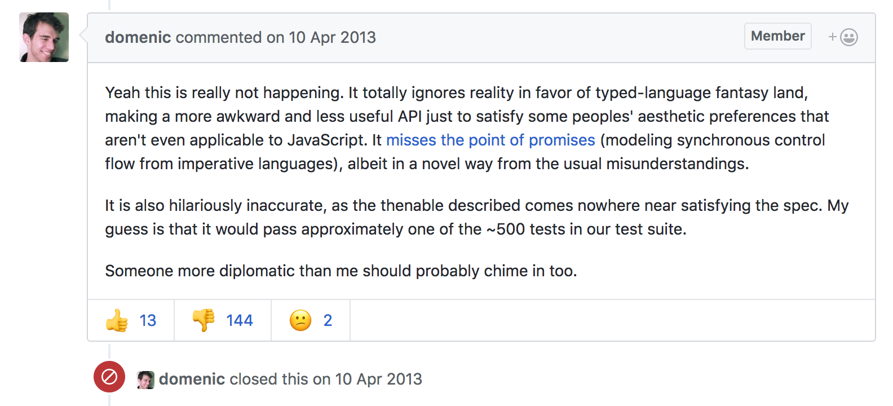

Fantasy Land: FP in JavaScript
Einar Norðfjörð
1 What is Functional Programming
- Functions are values
- The logical result of supplying to few arguments to a function, is another function
- Functions can be composed together to create new functions
2 Promises
2.1 What is a promise?
It's the javascripty way of representing a future value
2.2 then
Monad
Promise.then :: Promise a ~> (a -> Promise b) -> Promise b
Functor
Promise.then :: Promise a ~> (a -> b) -> Promise b
2.3 The epic issue

3 Fantasy land
A specification for the interoperability of algebraic datatypes in JavaScript

3.1 Yeah but why?
Having a specification like fantasy land allows us to create generic utilities for working with ADTs.
You can easily switch out different implementations that comply to the spec.
3.2 Some libraries
- Ramda
- A practical functional library for JavaScript programmers
- Sanctuary
- A refuge from unsafe JavaScript
- Fluture
- ü¶ãFantasyLand compliant (monadic) alternative to Promises
- Flyd
- Monadic Reactive Streams
- data.maybe
- Maybe implementation
4 Ramda
Ramda aims to be your functional toolbelt in javascript.
- All functions are curried by default (no monkey butts)
- All functions can dispatch to fantasy-land methods given correct input
- Has a lens implementation
import {pipe, map, multiply, chain} from 'ramda' pipe( map(multiply(2)), chain(num => [num, num / 2]) )([1,2,3])
4.1 The problem
It doesn't go far enough as a toolbelt.
import {find, propEq} from 'ramda' find(propEq('name', 'Einar'), []) // null
Let's take a look at sanctuary
5 Some actual code @ Activity Stream
We have a css utility library that allows us to conditionally load a theme
const themePath = fetchUserThemePath() const basePath = Future.of('styles') const isGlobal = anyPass([startsWith('/'), startsWith('http')]) const cssPath = Future.of(basePath => themePath => isGlobal(themePath) ? themePath : basePath + themePath ) .ap(basePath) .ap(themePath) cssPath.fork(console.error, addCSSFilesToDocument);
5.1 Now we need to make it dynamically update
const themePath = stream('_default') const basePath = stream('styles') const isGlobal = anyPass([startsWith('/'), startsWith('http')]) const cssPath = stream(basePath => themePath => isGlobal(themePath) ? themePath : basePath + themePath ) .ap(basePath) .ap(themePath) fetchUserThemePath.fork(console.error, themePath) on(addCSSFilesToDocument, cssPath)
Just by changing the applicative implementation and some mild boilerplate we now have live updates.